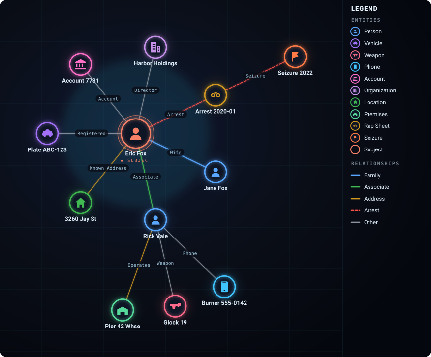

A graph-visualization library for intelligence / criminal link analysis, built around the POLE entity model — People, Objects, Locations, Events. The layout engine lives in GraphJS; LinkAnalysis is the domain layer on top.
A live, cinematic link-analysis console: a force-directed person-of-interest network with a radial right-click PieMenu, entity dossiers, and a tactical HUD.
Launch command center →